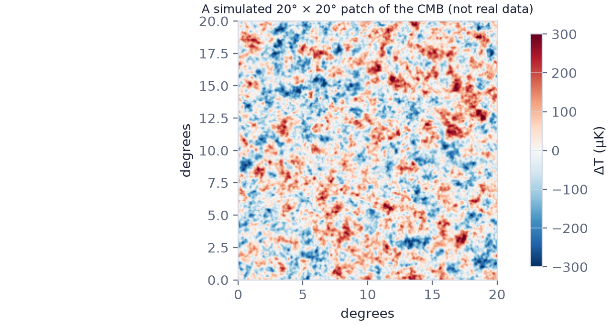
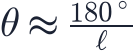
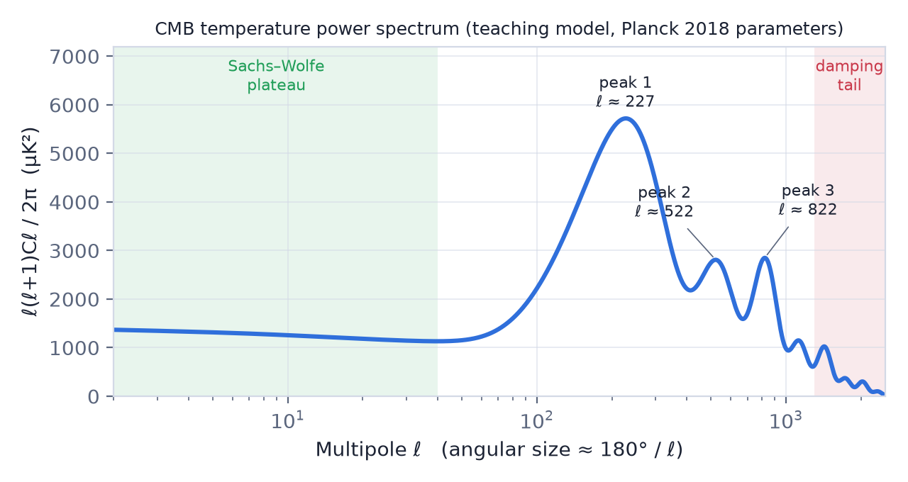
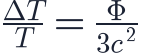
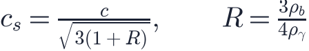
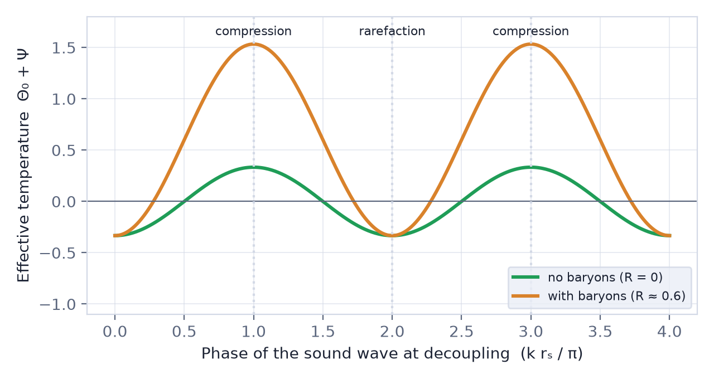
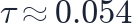

In this lesson you will learn
|
Ripples of one part in 100 000
The cosmic microwave background has the same temperature, 2.7255 K, in every direction, but not exactly. After removing the dipole caused by our own motion (lesson L4.4), tiny differences remain: typically about 100 microkelvin, or one part in 30 000.

Try it: CMB Sky Viewer The CMB Sky Viewer shows the real WMAP nine-year map. Apply the analysis mask, then read the rms and the ratio to 2.7255 K: this is the sky the rest of the lesson is about. |
These anisotropies are the imprint of small density variations in the universe 380 000 years after the Big Bang. The same variations later grew into galaxies and the cosmic web. Understanding their pattern turned cosmology into a precision science.
From a map to a power spectrum
A map of random-looking spots is hard to compare with theory spot by spot. What
matters is how strong the fluctuations are on each angular scale. Cosmologists
decompose the sky into spherical harmonics, the equivalent of musical notes
on a sphere. Each has a multipole number  that corresponds to
an angular size of roughly
that corresponds to
an angular size of roughly

- (the quadrupole) describes patterns spanning the whole sky;
- describes spots about one degree across, twice the size of the full Moon;
- describes details of a few arcminutes.
The angular power spectrum gives the variance of the fluctuations at each multipole. It is usually plotted as
in units of μK², which gives roughly equal weight to all scales.

The spectrum has three regions: a flat plateau on large scales, a series of acoustic peaks, and a damping tail on small scales.
Large scales: the Sachs–Wolfe plateau
When the CMB was released, regions larger than about one degree on today's sky were bigger than the distance light had travelled since the Big Bang (lesson L2.6). No physical process had time to change them. We see their original fluctuations.
Photons climbing out of a denser region, which is a gravitational potential well, lose energy and look cooler; photons from underdense regions look hotter. This is the Sachs–Wolfe effect, discovered in 1967:

where is the gravitational potential. If the initial fluctuations have the same strength on all scales, as inflation predicts (), this part of the spectrum is flat.
Intermediate scales: sound waves
Before recombination, photons, electrons and nuclei formed a single hot plasma. Gravity pulled the plasma into denser regions, while the enormous photon pressure pushed back. The result was oscillation: sound waves, just like air being compressed and expanded.
The waves travelled at roughly half the speed of light (58% early on, about 45% by recombination as the baryons grew heavier relative to the photons),

where  measures how much the baryons weigh down the plasma. By recombination a
sound wave could have travelled the sound horizon Mpc
(comoving).
measures how much the baryons weigh down the plasma. By recombination a
sound wave could have travelled the sound horizon Mpc
(comoving).
Snapshots of oscillations At recombination every Fourier mode of the plasma was caught at a particular moment of its oscillation. Modes that had just reached maximum compression (hot) or maximum rarefaction (cool) produce the strongest temperature differences: these are the acoustic peaks. Modes caught in between, at zero displacement, produce the troughs. |
The first peak corresponds to waves that had time to compress exactly once, the
second to waves that compressed and then rarefied, the third to waves that
compressed twice, and so on. The peaks are therefore evenly spaced in  :
:
with a small phase shift that moves the first peak to  .
.

What the peaks measure
The position of the first peak: geometry. The sound horizon  is a ruler of
known length at a known distance. Its angular size therefore measures the
curvature of space (lesson L2.5). In a closed universe the peaks move
to lower
is a ruler of
known length at a known distance. Its angular size therefore measures the
curvature of space (lesson L2.5). In a closed universe the peaks move
to lower  (larger spots); in an open universe to higher
(larger spots); in an open universe to higher  . Planck measures
the angle to 0.03%:
. Planck measures
the angle to 0.03%:
The heights of odd and even peaks: ordinary matter. Baryons add weight to the plasma. The oscillation is shifted towards compression, so compression peaks (1st, 3rd, 5th) grow relative to rarefaction peaks (2nd, 4th). The ratio of the first two peaks measures , in perfect agreement with Big Bang nucleosynthesis (lesson L4.3).
The overall height: dark matter. When modes entered the horizon during radiation domination, the decaying gravitational potentials gave the oscillations an extra push (radiation driving). More dark matter means earlier matter domination and less driving. The third peak is especially sensitive, and its height requires : dark matter must exist and cannot be made of baryons.
The slope: the initial fluctuations. The spectral index  tilts
the spectrum slightly, showing that primordial fluctuations were a little stronger
on large scales, as inflation predicts.
tilts
the spectrum slightly, showing that primordial fluctuations were a little stronger
on large scales, as inflation predicts.
Try it: CMB Power Spectrum Explorer Change Ωk, Ωb h² and Ωc h² one at a time. Watch the peaks move and change height, and compare the simulated sky patches. |
Small scales: damping
Photons were not perfectly locked to the electrons: they random-walked a short distance between scatterings. This diffusion damping (or Silk damping, after Joseph Silk) smeared out the smallest ripples. The spectrum falls exponentially beyond .
Later, when the first stars reionised the universe, about 5% of CMB photons
scattered again on free electrons, reducing all fluctuations smaller than the
horizon at that time by a factor  with the optical depth
with the optical depth

.Polarisation Scattering also polarised the CMB slightly. Its E-mode pattern, measured by WMAP, Planck, ACT and SPT, confirms the acoustic picture independently. A different B-mode pattern would reveal gravitational waves from inflation; experiments such as BICEP/Keck and the Simons Observatory are searching for it. |
Six numbers from a curve
Fitting the full power spectrum with Boltzmann codes such as CAMB and CLASS gives the six ΛCDM parameters of lesson L3.4 with percent precision. The same model then predicts the distribution of galaxies billions of years later, which is tested in the next lessons.
The model in this app The Cosmos simulator uses a simplified, calibrated model. Peak positions follow the real physics; heights are accurate to about 15%. It is ideal for understanding trends, not for measuring parameters. |
Remember this
|